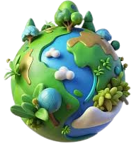

EXPLORANDO EL MUNDO TERRESTRE



DEFINICION
La exploración del mundo terrestre se refiere al estudio y la investigación profunda de la superficie de la Tierra y todos sus componentes naturales y geográficos. Este campo abarca disciplinas como la geografía física, la geología, la ecología y la biodiversidad, que permiten comprender la estructura del planeta, los fenómenos naturales, la distribución de los ecosistemas y la interacción entre los seres vivos y su entorno.
GEOGRAFIA FISICA
La geografía física estudia la superficie terrestre desde diversas perspectivas, incluyendo la configuración del relieve, la hidrología de los cuerpos de agua, el clima y los procesos naturales que moldean el paisaje. Este campo examina cómo las fuerzas geológicas y atmosféricas interactúan para dar forma a nuestro planeta, proporcionando un entendimiento crucial de la dinámica de la Tierra y su influencia en los seres vivos y el entorno humano.
COMPRENDIENDO NUESTRO HOGAR TERRESTRE
Desde la geografía física, que revela la configuración del relieve y los procesos geológicos, hasta la ecología y la biodiversidad, que exploran las complejas interacciones entre los seres vivos y su entorno, cada disciplina contribuye a nuestra comprensión global del planeta. Esta exploración no solo enriquece nuestro conocimiento científico, sino que también es fundamental para abordar los desafíos ambientales actuales y garantizar la sostenibilidad de nuestro hogar terrestre para las generaciones futuras.